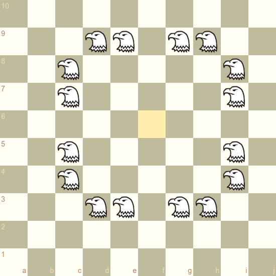
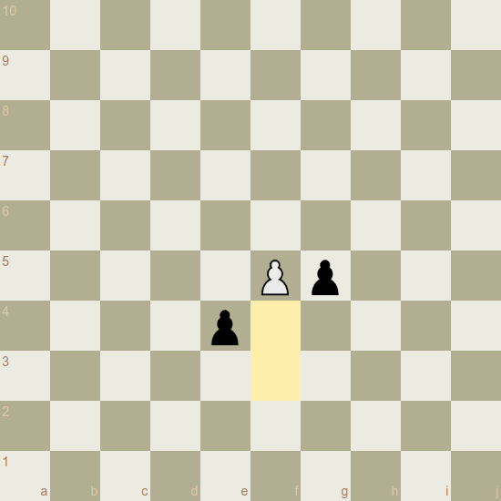

Skymate - Chess on a 10x10 Board
Classic Vibe. New Adventures.
What happens if the design principles of chess are applied to 10x10? Only three adjustments are needed: The next logical piece, an expanded start position and faster pawns. Will it work?
Board
The board is extended to 100 (10x10) squares. The files are labeled with the letters a-j, the ranks with the numbers 1-10. The lower right square of the board is black.
Eagle
One new piece is introduced. The eagle is basically a "big knight" and the logical next twin piece after bishop, knight and rook. Whilst the knight reaches all squares in a two square distance that cannot be reached by rook or bishop, the eagle has the same ability for the squares in a three square distance. It would control the following fields if placed on the f6 square:

Like the knight, the eagle can "jump over" all other pieces (of either color) to its destination square.
The piece is complementary to bishop, knight and rook. Means, it covers only squares that are not covered by these pieces:

Each player starts with two eagles.
Pawns
The pawns are modified as follows:
They can move up to three steps forward when placed the initial square.
Up to two steps forward when placed on the third, fourth or fifth rank.
One step forward when placed on the sixth rank or higher.
This means a pawn can reach the promotion field within five moves, which is the same number of moves as in classical chess:

En passant capturing is possible each time a pawn passes an enemy pawn by moving more than one square forward in one move:

Castling
The castling rules are the same as in classical chess. King moves two squares towards the rook, rook jumps over. Thus, after 0-0 the king and rook are located on h1 and g1, after 0-0-0 on d1 and e1.

Initial Setup
The piece arrangement before move one is as follows:

Notes
Skymate incorporates the following design elements of classical chess:
- Two single pieces: The key piece and the strongest piece. The latter has the same move pattern as the key piece but with unlimited range.
- Three (four) pairs of twin pieces that are complementary to each other.
- Pieces with ambiguous routes to their destination squares (knight, eagle) can move directly to these squares regardless if one or all routes are blocked.
- Pawns get slower once they pass a certain rank number.
- All pieces can be developed by moving only the two central pawns.
- No unprotected pawns in the initial position.
- The game is played on a square board.
It differs from chess regarding the piece value distribution
In chess the number of equally valued pieces consequently decreases with the piece value: Eight pawns, four pieces worth three pawns, two pieces worth five pawns, one piece worth nine pawns. Skymate has four light pieces worth three (10x10) pawns but four heavy pieces worth five pawns as well.
Some estimations regarding the game dynamics:
Upvaluing the pawns by making them faster seemed necessary to keep the dynamic spirit of the original game that includes fast confrontation and a broad spectrum of possibilities for piece sacrifices.
The start position provides maximum flexibility regarding the pawn structures that can arise in a game. Means, the pawn structure should be mainly be a choice of the players and not be dictated by the setup. The lesson from Chess960 is here that this flexibility is determined by the position of the bishops and the queen.
The eagle might be about as valuable as a rook (my own estimation).
10x10 should faciliate gambits and sacrifices in general, since one pawn unit represents a lower fraction of the complete material stock.
Chances for an asymmetrical material distribution - one of the most tension creating features in chess - are increased as well.
The knight obviously suffers from longer routes on the bigger board, but controls on average more squares than in classical chess.
The king might be the only piece that is less powerful on the bigger board.
Modifying the Start Position
The game concept includes possibilities to modify the setup of the pieces while leaving all other game rules untouched - except the castling rule which was introduced to fix some issues with the classic setup. This follows Fischers idea to get away from the overanalyzed rnbqkbnr setup, but keeping the spirit of the original game. He came up with Chess960 but there are other plausible concepts.
Corner Kings
The castling rule is replaced by the rule that the kings are always start on the first and the last square of the board. The remaining white pieces are randomly placed on the first rank and mirrored for black in a point symmetric fashion. This makes for a razor sharp mode that will expand your tactical skills nicely ;-)
Piece Placement
Vintage
A plausible default setup.
Placement
Suggested by Bronstein and Benko. In this mode, each player starts with eight pawns only, and the first eight moves are used to place the pieces behind them.
The following conditions must be met:
- The bishops must be placed on different square colors.
- The king must be placed between the rooks.
- As long as it's possible and the two conditions above are not violated, a piece can only be placed on a file where the opponent hasn't already placed a piece of the same type.
The castling rules are the same as in Chess960/Fischer-Random.
Random
All pieces are placed randomly.
If combined with corner kings, an eagle can't make the first move, since for some setups white could immediately create a deadly mate threat.
------------------------------
By
Uli S.
Berlin
contact@skymate.live
2019-2022